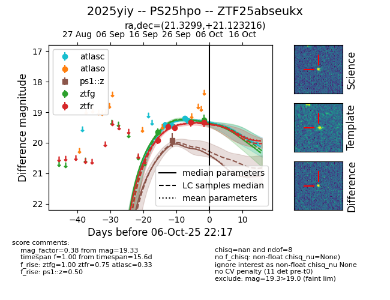
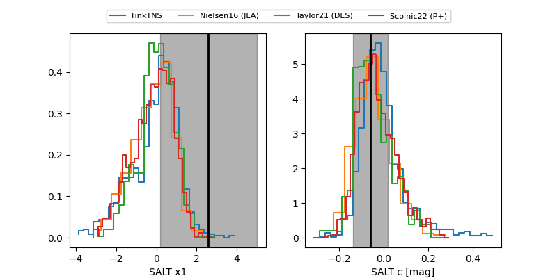

FINK: ZTF25abseukx
Lasair: ZTF25abseukx
ALeRCE: ZTF25abseukx
TNS: 2025yiy
YSE: 2025yiy
ZTF25abseukx (ztf,fink)
2025yiy (tns,yse)
PS25hpo (panstarrs)
equatorial (ra, dec) = (21.3299,+21.12322)
galactic (l, b) = (133.4308,-41.05679)


last atlasc=19.27, ps1::z=19.92, ztfg=19.25, ztfr=19.33
4 atlasc, 1 ps1::z, 3 ztfg, 5 ztfr detections